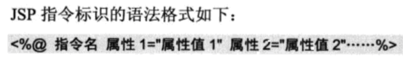

<%%>是指令标识。
基本上就是说，使用<%%>指令标识，里面的代码块就会被认为是指定语言的代码块
表示不是直接由客户端接受的，而是由服务器端解释后，传给客户端接受的。
具体是什么语言，在html文件的开头有标签解释。(<%@ language = java ...%>)

page指令
用来设置页面的各个属性。
常用属性有：
language=“java"
import
session
contentType=“text/html; charset=utf-8"
pageEncoding=“utf-8"
（注意charset 是属性contentType下的小属性；
如果没有设置pageEncoding属性的话，页面编码就由charset来设定，
如果有设置pageEncoding属性的话，就由pageEncoding设定）
(例5.1)
include指令
通过这个指令，一个jsp文件可以包含另一个jsp文件；
但这种包含是静态包含，相当于将被包含的jsp文件全部拷贝过来，不会执行被包含文件的jsp代码
提高代码的重用性（例5.11）
<%! …...%>声明标识
用于声明变量或方法，在本页面全局可用
<%— …...—%>隐藏注释
这样的注释方式，在客户端看source file时是看不到注释信息的
<!—<%=newDate()%>—>动态注释
html的注释，对java命令标识不起作用，所以<%%>内的代码还是会运行，
故在看源代码注释的时候，还是会显示当前的时间
<jsp:include>动作标识
这也是将所include的页面包含进来。
但这个所包含的即可以是静态文件，也可以是动态文件。
意思就是说在文件执行过程中，被包含的文件会被服务器编译并执行。